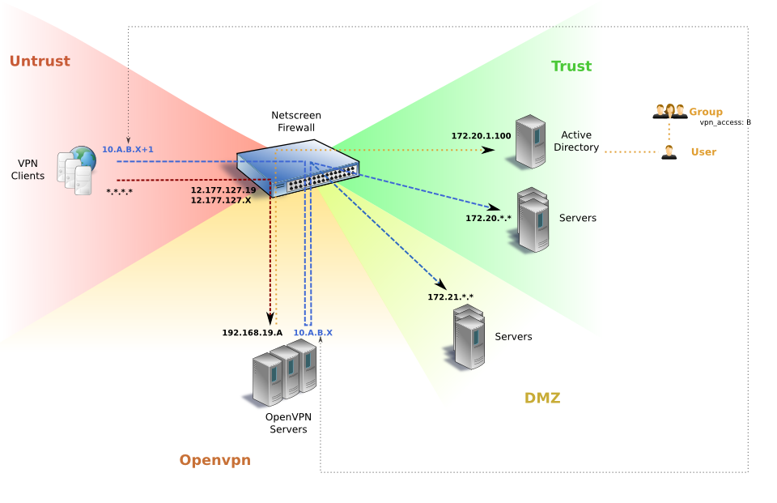

There are several different systems that need to be configured in
order to setup OpenVPN access to the EXAMPLE network using access polices
stored in LDAP/Active Directory. This page describes the process of
configuring each one. This document assumes that the primary edge
firewall is a Juniper Netscreen and the core router is Cisco, however
the basic principles should apply to any sufficiently powerful firewall
and router.
- Goals
- Big Picture
- Network Configuration
- Active Directory
- Certificate Authority (CA) and Windows Packaging System
- OpenVPN Linux Server
- install CentOS 5.2
- user configuration
- software
- install openvpn service
- openvpn configuration
- SELinux, iptables and IP forwarding
- DNS
- Certificate revocation access for the vpn user:
- Final steps (log rotation, start services)
- Miscellaneous / Links
Goals
The goals of the OpenVPN system are:
- easy for users to setup and use
- Support for easy installation of the client on Windows XP and Vista systems
- easy to manage and maintain
- easy to add new users to the system
- easy to create and modify new access policies
- user access is logged
- easy to disable user accounts
- secure, access controls
- only legitimate users are given access and only the level of access they require
- the system maintains the security of the EXAMPLE network and the user's home network
- user accounts expire
- scalable, and fault tolerant
- the system can easily scale with an increase in the number of users and amount of network traffic
- vpn servers are redundant so that if one goes offline, users still have the ability to connect
Big Picture
For a graphical step by step walkthrough of how the OpenVPN system works see OpenVPN Walkthrough.
Various ongoing administrative tasks related to OpenVPN are documented in OpenVPN HOWTOs.
Here is the diagram of what the overall OpenVPN configuration looks like:

Network Configuration
DNS and OpenVPN server IP assignment
The hostname for the OpenVPN servers as a group is openvpn.example.com.
Each OpenVPN server should be given an external and internal IP
address. All the IP addresses should have forward and reverse lookups
for openvpn.example.com. In other words, an external lookup for
"openvpn.example.com" should return multiple IP addresses (one per OpenVPN
server). It is also convenient to give each server it's own internal
hostname: openvpn1.example.com, openvpn2.example.com.
The external IP addresses for the OpenVPN servers can be any available
external addresses. The internal addresses should be '192.168.19.A'
where A is the OpenVPN server number starting at 100. The MIP
mappings described below in the Netscreen firewall map the external to
internal addresses.
Cisco VLANs
The OpenVPN server ports should be in their own separate VLAN. This
VLAN should be trunked (802.1q) over to the DMZ port on the firewall.
- First create the OpenVPN VLAN:
vlan 19 name openvpn exit
- Then add the ports for the OpenVPN servers to that VLAN where
<port> is something like "g5/33":config t inter <port> switchport mode access switchport access vlan 19 end
- The OpenVPN VLAN along with other DMZ VLANs should be trunked over to the
DMZ port on the firewall. Here is a sequence of commands which would accomplish
this where <port> is the Netscreen DMZ port, the default DMZ VLAN is "3" and
<list> is the list of DMZ VLANs to trunk to the Netscreen:config t inter <port> switchport trunk encapsulation dot1q switchport trunk allow vlan 3,19,<list> switchport trunk native vlan 3 switchport mode trunk no switchport access vlan 3
Firewall Configuration
Access from OpenVPN users to the EXAMPLE network is controlled and
enforced by the firewall(s) (Juniper Netscreen). The OpenVPN servers are
placed in their own firewall Zone.
- Create the "openvpn" zone.
- Go to "Network->Zones" and click "New" in the uppper right corner.
- Use the following settings:
Zone name openvpn Zone type Layer 3
- Create a sub-interface for the VLAN that hosts the OpenVPN servers.
- Go to "Network->Interfaces" page.
- In the upper right select "Sub-IF" from the drop-down and then
click "New". - Use the following settings:
Interface Name ethernet0/2 . 1 Zone Name openvpn IP Address/Netmask 192.168.19.50 / 24 Manageable Yes Manage IP blank VLAN Tag 19 Other Services, Ping X
- Create MIP mappings from external IP addresses to the internal
- Go to "Network->Interfaces" page.
- Edit *"ethernet0/3" -> MIP properties tab
IP/netmask Host IP Netmask VRouter 12.177.127.19 192.168.19.100 255.255.255.0 trust-vr 12.177.127.X 192.168.19.101 255.255.255.0 trust-vr
- Create a static route for each OpenVPN server. The destination will
be the vpn client subnet owned by that OpenVPN server and the gateway
for the route will be the OpenVPN server itself. For example, if there
are three OpenVPN servers then the static routes will look like this:- Click "Network"-> "Routing" -> "Destination":
IP/netmask gateway Interface Protocol Preference 10.100.0.0/16 192.168.19.100 ethernet0/2.19 S 20 10.101.0.0/16 192.168.19.101 ethernet0/2.19 S 20 10.102.0.0/16 192.168.19.102 ethernet0/2.19 S 20
- Click "Network"-> "Routing" -> "Destination":
- Create "OpenVPN Zone to Trust Zone" policies
Source Destination Service Description openvpn servers (openvpn.example.com) domain.example.com DNS, LDAP, LDAP over ssl, ping Internal DNS
client-connect script to Active Directory queriesVPN - Admin Users
(10.100.1.0/24,
10.101.1.0/24,
10.102.1.0/24)server1
server2
server3
server4
server5Any Access level 1: give admin users broad access VPN - DB Admins
(10.100.15.0/24,
10.101.15.0/24,
10.102.15.0/24)server1
server2Any Access level 15: DB admins VPN - Intranet
(10.100.30.0/24,
10.101.30.0/24,
10.102.30.0/24)server3
server480 443 Access level 30: Intranet users - Create "OpenVPN Zone to DMZ Zone" policies
Source Destination Service Description VPN - Admin Users web servers Any Access level 1: give admin access to web servers openvpn servers (openvpn.example.com) dns.example.com (30) DNS, ping External DNS - Create "Untrust Zone to openvpn Zone" policies
Source Destination Service Description Any MIP (External IP 1)
MIP (External IP 2)OPENVPN, PING AND SSH Allow external users to connect to openvpn servers - Create "Trust Zone to openvpn Zone" policies
Source Destination Service Description Any openvpn - openvpn.example.com Any open internal access to openvpn servers - Create "DMZ Zone to openvpn Zone" policies
Source Destination Service Description Any MIP (External IP 1)
MIP (External IP 2)OPENVPN, PING AND SSH Allow users in guest nets to connect to openvpn servers
Active Directory
Query User
When a user connects to the openvpn service, the "client-connect.py"
script will be executed. This script will query the Active Directory
domain and determine the VPN group that the user is a member of. The
VPN group membership will determine what access level the user is
given.
- Add a user named "vpnquery" to Active Directory. This user should
be given read-only access. The "client-connect.py" script will login
to the AD domain in order to lookup user and group information. - Set the "vpnquery" user password to a strong password.
VPN Groups
Different sets of users will have different levels of access to the
network via the openvpn system. Each access level is mapped to an Active
Directory group and users are made members of the group that maps to the access
level the user is assigned.
The lowest access level number gives the highest level of access and
the higher the access level number the more restricted the access. If
a user is a member of more than one VPN group, then they will be
assigned the lowest access level number (highest permission level)
from those groups.
- Create a VPN Active Directory group for each access level. The group name
must start with the string "VPN ". - In the "Notes" field of the group the access level is assigned. For
example, to assign a group to access level "15", the following
should be added to the Notes field:vpn_access: 15
- This assumes a fairly standard Active Directory schema. For other LDAP
systems, "client-connect.py" may need modification. - Make VPN users members of the appropriate VPN group.
Certificate Authority (CA) and Windows Packaging System
In order for a user to have access to the OpenVPN system, they must
have a user certificate/key file that is signed by the same root
Certificate Authority that has signed the server key file that is on
each OpenVPN server.
The Certificate Authority (CA) key file should be
kept super secret because access to that file allows a valid signed
client certificate/key to be created (and likewise creation of
a valid signed server certificate/key). In particular, the CA key
file should not be kept on the OpenVPN servers. It is not needed on
the server and if the CA is compromised then a new CA must
be created and all client and server certificate/keys must also be
recreated and signed by the new CA.
The system where certificates are created and revoked and where the
Windows Installer packaging is done should be a well secured Linux
server. Preferably one that has user access limited to just those
users that need to manage VPN certificates.
Setup ca.example.com
The certificate management system is named ca.example.com. These instructions work
with Linux server with Ubuntu Server 9.04 (Jaunty, 32-bit).
Here are the steps to prepare a Linux server to be a certificate
management system:
- Install the nsis and zip packages:
sudo apt-get install nsis zip git openvpn openssl
- Create the vpn user for certificate managment.
sudo useradd -m -G sambashare -s /bin/bash vpn sudo passwd vpn
- Create a packages directory
sudo mkdir -p /home/vpn/packages
- You may also want to share the packages directory via samba (i.e. if the
help desk users are running Windows and will be emailing the packages) by adding
the following settings to /etc/samba/smb.conf:security = user [vpn_packages] comment = VPN Windows Installer Packages read only = no path = /home/vpn/packages guest ok = no write list = vpn, @admin - Restart samba
sudo /etc/init.d/samba restart
Client Tools Download
If you haven't done so already, download and setup the OpenVPN LDAP
integration project onto the the Certificate Authority system.
- Use git to clone the project into the 'client' subdirectory:
git clone git@github.com:kanaka/OpenVPN-LDAP-Integration.git client
- Follow the instructions in the README file to download, unpack
and setup the additional items needed for Windows client packaging and for
DD-WRT router firmware generation.
Certificate Authority (CA)
Create a new certification authority as the vpn user on ca.example.com:
- Use the 'vpn_client' script to create a new CA:
cd client ./vpn_client new-ca
The certificate authority, key index, and all user certificates and keys live
in the /home/vpn/client/keys on the ca.example.com server.
Here is a list of files in the 'keys' directory and their function:
| ca.crt | The master CA certificate |
|---|---|
| ca.key | The master CA private key (keep super secret) |
| crl.pem | CRL - signed list of revoked certificates |
| server.crt | The server CA signed certificate |
| server.key | The server CA signed private key (keep secret) |
| index.txt | The master CA list of client keys, serial number, expiration dates and revocation status |
| serial | File containing next key index number (in hex) |
| ta.key | Shared/symmetrical static key (keep secret) |
| dh1024.pem | Diffie-Helman parameters |
| <username>.crt (multiple) | <username>'s CA signed certificate file |
| <username>.key (multiple) | <username>'s CA signed private key file (keep secret) |
| <username>.p12 (multiple) | <username>'s CA signed, encrypted and password protected PKCS12 key/crt |
The configuration files for creating keys and for the client software
are stored in the /home/vpn/client/config directory on the
ca.example.com server.
Here is a list of files in the 'config' directory and their function:
| client.ovpn | The Windows OpenVPN client configuration |
|---|---|
| linux.conf | The Linux OpenVPN client configuration |
| openssl.cnf | The certificate management configuration |
| router.conf | The main Linksys WRT54GL OpenVPN client configuration |
| nvram/ | Additional Linksys WRT54GL OpenVPN configuration files |
| S02openvpn | The Linksys WRT54GL OpenVPN startup script |
| All the files in /home/vpn/client/ should be backed up regularly. |
If the certificate management server is being restored or recreated,
after the OpenVPN-LDAP-Integration directory is cloned using git, the
keys and config directories should be restored from a backup.
OpenVPN Linux Server
The OpenVPN clients will connect the OpenVPN servers. This section
describes how to configure the OpenVPN servers so that in addition to
the LDAP/Active Directory integrated authentication, multiple servers
can be used to provide redundancy and performance scaling.
These instructions are oriented at configuring CentOS 5.2 servers
since the SELinux support in RHEL/CentOS is well established. However,
these instructions should be adaptable to any Linux distrubution. In
addition to describing how to configure the OpenVPN servers with the
LDAP/Active Directory integrated authentication, the setup of multiple
servers is described which provides redundancy and performance scaling.
install CentOS 5.2
- Burn an bootable ISO image for CentOS 5.2 and then boot the system from CD 1 or the DVD.
- For the network configuration use a manual connection and the
following settings:- IP: 192.168.19.XXX (XXX is 100 for first server, 101 for second, etc)
- gateway: 192.168.19.50.
- hostname: openvpnX.example.com (X is server number)
- Set the root password to the normal setting (later this will be
disabled for remote logins) - When selecting packages, choose the "Server" option but unselect
the "Desktop - Gnome" option (having a GUI is a security risk). - After rebooting you will be prompted with another configuration
screen. Use the following options:- Choose Authorization->MD5 Passwords
- Firewall->Security Level Enabled
- Firewall->SELinux: Enforcing
- Under Services, turn off: autofs, avahi-daemon, bluetooth, cups,
gpm, isdn
- For the network configuration use a manual connection and the
user configuration
- Log in as root and edit '/etc/sudoers' and activate the use of the wheel
group for sudo. This allows members of the "wheel" group (/etc/group) to be
able to use sudo to run commands with root privilege. Uncomment the line
starting with "# %wheel" so that it looks like this:%wheel ALL=(ALL) ALL
- Add additional users that can use sudo:
useradd -m -s /bin/bash -G wheel smith passwd smith
- Log back in as a normal user and use sudo from now on instead of using a root
prompt (this is standard best practice for UNIX like systems). - Configure '/etc/ssh/sshd_config' so that only non-root users may login via
ssh (to enforce using sudo).... PermitRootLogin no AllowUsers smith openvpn ... X11Forwarding no ...
software
- A secure server should only have software that is needed for the
service being provided. Unnecessary software should be removed since
it increases security risk. - Remove other uneeded GUI software for security:
sudo yum remove xorg-x11-server-Xorg gnome-vfs2 xorg-x11-font-utils
- Remove other uneeded software for security:
sudo yum remove php-common qt SDL vnc vnc-server
- Install some useful diagnostic packages
sudo yum install nmap screen openldap-clients
- Start ntpd for time synchronization
sudo /sbin/chkconfig --levels 345 ntpd on sudo /etc/init.d/ntpd start
- Stop unneeded services (ignore failure messages):
for service in bluetooth pcscd rpcidmapd nfslock gpm cups; do sudo /sbin/chkconfig ${service} off sudo /etc/init.d/${service} stop done
install openvpn service
- Setup the rpmforge package repository
wget http://dag.wieers.com/rpm/packages/rpmforge-release/rpmforge-release-0.3.6-1.el5.rf.i386.rpm sudo rpm -Uvh rpmforge-release-0.3.6-1.el5.rf.i386.rpm
- Install the openvpn package from rpmforge
sudo yum install openvpn
- Create an openvpn user/group for the daemon to run as (i.e. leave
the password locked).sudo /usr/sbin/useradd -m openvpn
- Give ownership of the openvpn configuration directory to the openvpn
user and openvpn group:sudo chown openvpn.openvpn /etc/openvpn sudo chmod g+w /etc/openvpn
- Add smith to the openvpn group so that the smith user can modify
openvpn configuration files.sudo /usr/sbin/usermod -a -G openvpn smith
openvpn configuration
- From the master certificate/client creationg system (ca.example.com),
copy the server configuration and certificates to the /etc/openvpn/
directory on the server. Do not copy the private Certificate Authority
key (ca.key).ssh vpn@ca.example.com cd ~/client/keys scp dh1024.pem crl.pem ca.crt server.crt server.key ta.key smith@openvpnX.example.com:/etc/openvpn cd ~/server scp client-connect.py server.conf dh1024.pem smith@openvpnX.example.com:/etc/openvpn scp openvpn.te smith@openvpnX.example.com:
- Back on the server, edit the "/etc/openvpn/server.conf" and change
the following two setting to match the current server's configuration,
where "ZZZ" is the number associated with this server (i.e. 100 for
the first openvpn server, 101 for the second, etc):... server 10.ZZZ.0.0 255.255.0.0 ... push "dhcp-option DNS 192.168.19.ZZZ" ...
- Create the configuration file "/etc/openvpn/client-connect.cfg"
for the "client-connect" script that specifies how the script should
connect to Active Directory. Replace "<PASSWORD>" with the password
for the "vpnquery" user that was created above. In this example '172.20.0.5'
is the address of an Active Directory domain server.ldap_server = ldap://172.20.0.5 # Query account and password ldap_dn = cn=vpnquery,cn=Users,dc=dept,dc=example,dc=com ldap_password = <PASSWORD> # Search for "VPN*" groups in ldap_group_dn ldap_group_dn = cn=users,dc=dept,dc=example,dc=com
- Set the ownership and file permissions so that only the openvpn user
and users in the openvpn group can access the new configuration:sudo chown -R openvpn.openvpn /etc/openvpn/ sudo chmod ug+rw,o-rwx /etc/openvpn/*
- Make the client-script executable
sudo chmod u+x /etc/openvpn/client-connect.py
SELinux, iptables and IP forwarding
SELinux a system that enforces fine-grained security policies at many
levels of a Linux system. Each package or service that is installed on
a SELinux enabled system usually requires an SELinux module that
permits that package to be able do the actions on the system that it
requires to operate. Packages that distributed with a SELinux enabled
distribution typically will have an SELinux module as part of the
package installation. However, the openvpn package comes from the
rpmforge repository and does not comes with an SELinux module so
one must be created.
- Compile and add the definitions in that module to the running
SELinux policy set. The openvpn.te file that was copied above,
contains the SELinux policy definitions required to run the openvpn
service.checkmodule -M -m -o openvpn.mod openvpn.te semodule_package -o openvpn.pp -m openvpn.mod sudo /usr/sbin/semodule -i openvpn.pp
- Explicitly permit openvpn to create a management port:
sudo /usr/sbin/semanage port -a -t openvpn_port_t -p tcp 7505
The default firewall (iptables) ruleset on CentOS 5.2 is fairly locked
down. In order to allow remote OpenVPN clients to connect and to
forward traffic via the OpenVPN server, two rules must be added to
ruleset. Also, allow ssh connections to the system.
- Edit /etc/sysctl.conf and turn on IP forwarding on boot:
net.ipv4.ip_forward = 1
- Update the running state:
sudo sysctl -p /etc/sysctl.conf
- Edit /etc/sysconfig/iptables and add the following rules right
before the final "REJECT" line.# OpenVPN Rules -A RH-Firewall-1-INPUT -m state --state NEW -m udp -p udp --dport 1194 -j ACCEPT -A RH-Firewall-1-INPUT -i tun0 -j ACCEPT # Allow SSH -A RH-Firewall-1-INPUT -m state --state NEW -m tcp -p tcp --dport 22 -j ACCEPT
- Start Restart the firewall to update the rules
sudo /etc/init.d/iptables restart
DNS
In some cases servers may be visible to OpenVPN clients of the
EXAMPLE network by both an internal IP address and an external one,
for example, an IMAP server may have an internal and external mapping.
In some cases it may cause problems if the clients use the internal
mapping or switch back and forth when activating and deactivating
their OpenVPN client.
To solve this problem, the OpenVPN server runs a DNS proxy called
"dnsmasq" which has the capability to route DNS based on the domain
name of the hostname that is being resolved. When users connect to the
OpenVPN system, the client's are configured to use the OpenVPN server
itself as the DNS server which then proxies requests appropriately.
- Install "dnsmasq"
sudo yum install dnsmasq
- Add the following settings to the dnsmasq configuration file
"/etc/dnsmasq.conf" where '172.21.1.35' is the DMZ DNS server for
external address mappings and '172.20.0.12' is the internal trust network
DNS server.no-resolv server=/imap.example.com/172.21.1.35 server=/example.com/172.20.0.12 server=//172.20.0.12 server=172.21.1.35 server=/19.168.192.in-addr.arpa/172.20.0.12 server=/20.172.in-addr.arpa/172.20.0.12 except-interface=eth0
- The lines beginning with "server=" indicate how DNS requests should
be redirected. The default DNS server is "172.21.1.35". However, if
the hostname that is being queried matches the name between the
slashes, then the alternate DNS server will be used instead. - The line "no-resolv" indicates that dnsmasq should not read the
"/etc/resolv.conf" file for the list of DNS servers. The DNS servers
are specified using the "server=" configuration lines and we want to
be able to put the local system in "/etc/resolv.conf". - The "except-interfaces=eth0" line indicates that dnsmasq should not
answer DNS requests to its external network interface (only local and
tunneled VPN clients are allowed to query).
- The lines beginning with "server=" indicate how DNS requests should
- Add the localhost to the top of the DNS resolution list in
"/etc/resolv.conf" so that DNS resolution requests from the openvpn
server itself will be resolved in the same way as for the clients.
This is not critical, but it can be misleading for debugging later if
the DNS resolution happens differently. Here is what
"/etc/resolv.conf" should contain:search example.com dept.example.com nameserver 127.0.0.1
- Start dnsmasq when the system boots
sudo chkconfig --levels 345 dnsmasq on
Certificate revocation access for the vpn user:
In order to allow straight forwards revocation of client certificates,
the vpn user on the certificate management server should be given
the ability to make a secure shell connection to the OpenVPN servers
a DSA key and without a password.
- Log into ca.example.com as the vpn user. If you haven't already
done so then generate a DSA key pair for ssh. If you are setting up
a second OpenVPN server, then you should NOT regnerate the key or you
will break access to the first server.ssh vpn@ca.example.com mkdir -p ~/.ssh chmod 0700 ~/.ssh ssh-keygen -t dsa -f ~/.ssh/id_dsa -P '' chmod 0600 ~/.ssh/id_dsa*
- Copy the public half of the key to the OpenVPN server.
scp ~/.ssh/id_dsa.pub smith@openvpnX.example.com:
- Log into the OpenVPN server and add the public key to the openvpn
user's authorized_keys file.ssh smith@openvpn.example.com sudo mkdir -p ~openvpn/.ssh sudo chmod 0700 ~openvpn/.ssh sudo bash -c 'cat id_dsa.pub > ~openvpn/.ssh/authorized_keys' sudo chmod 0600 ~openvpn/.ssh/authorized_keys sudo chown -R openvpn.openvpn ~openvpn/.ssh/ sudo rm id_dsa.pub
Final steps (log rotation, start services)
- Turn on log rotation for the openvpn log file by creating a new file
named "/etc/logrotate.d/openvpn" that contains the following:/var/log/openvpn.log { weekly rotate 5 copytruncate notifempty missingok } - Start the openvpn service
sudo /etc/init.d/dnsmasq start sudo /etc/init.d/openvpn start
- Allow openvpn user to read from status and log files:
sudo chown openvpn.openvpn /var/log/openvpn.log /var/run/openvpn/openvpn-status.log
- The system should now be ready to go. Test connectivity from a client machine
Miscellaneous / Links
Microsoft Knowledge base article describing how to work around DNS ordering bug.
OpenVPN documentation page.
OpenVPN FAQ.